Lecture 23: Asset Pricing
课件截图第 1–5 页 · 对照官方第 23 讲逐字稿（页末可离线查看）。
今天买资产，付的是今天的钱；拿到分红、利息或转售收入，却在未来。理解资产价格需要同时回答三个问题：未来能拿到多少，等待意味着怎样的折现，以及承担风险需要多少补偿。
第 22 讲建立现值与债券的基础，本讲先复习这些概念，再把同一套逻辑用于股票、货币政策、风险情绪与泡沫。下一讲则把资产和人力财富的变化带回消费、投资与 IS–LM。
| 估值的三个入口 | 问自己什么 | 其他条件不变时的方向 |
|---|---|---|
| 现金流预期 | 未来分红或支付会增加吗？ | 预期现金流↑ → 价格↑ |
| 无风险利率路径 | 未来现金流要打几折？ | 适用贴现率↑ → 价格↓ |
| 风险补偿 | 这笔现金流在坏时候可靠吗？ | 要求的风险溢价↑ → 价格↓ |
本文件共有 24 张截图，封面明确写 Lecture 23: Asset Pricing；文件名中保留的 lecture-15 和正文旧页脚 Lecture 19 不作为讲次依据。截图中有重复市场图和片尾页，按主题整合，不把它们拆成独立知识点。
课件截图第 2–5 页 · 对照官方第 23 讲逐字稿（页末可离线查看）。
设每年利率为 i，今天 1 元可在明年变成 1+i 元。反过来，为了明年拿到 1 元，今天需要投入 1/(1+i) 元。两年后的收入要经过两次折现；若各年的利率不同，每一年用各自的因子。
第二行是课件采用的预期路径简化：未知现金流与未来利率用今天的预期表示。在一般随机环境下，“比值的期望”不等于“期望的比值”，风险也不能仅靠把现金流换成平均值就处理完；本讲后续用风险溢价概括这一影响。
付款次数必须另行写清。以下用 T 表示付款总次数，避免把最后一期的下标误当成次数。每次付款都是 Z，利率固定时：
| 付款安排 | 今天的价值 | 关键提醒 |
|---|---|---|
| 从明年起付 T 次 | \(\frac{Z}{i}[1-(1+i)^{-T}]\) | 第一次付款折现一次；i=0 时为 TZ |
| 从今天起付 T 次 | \(\frac{Z(1+i)}{i}[1-(1+i)^{-T}]\) | 比上行多乘 1+i |
| 从明年起永久支付 | \(Z/i\) | 要求 i>0 |
| 从今天起永久支付 | \(Z(1+i)/i\) | 包含今天无需折现的 Z |
例如每年 10 元、利率 5%：明年开始永久支付，现值是 200 元；今天开始，则是 210 元。股票常用除息后的价格，表示当期股息已经支付，后续现金流从下一期开始。
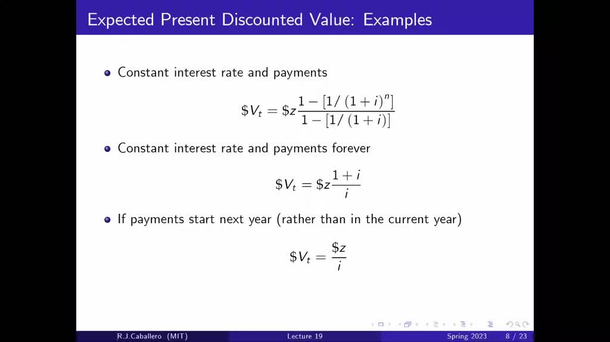
课件截图第 6、9–10 页 · 对照官方第 23 讲逐字稿（页末可离线查看）。
先看两年后支付 100、期间不付息的零息债。若没有风险补偿，按预期短期利率折现得到：
另一条推导路线是比较相同的一年持有期：买一年债持有到期，或买两年债、一年后卖掉。后者到出售时已经变成剩余一年期的债券。
这里最重要的区别是上标 e：今天只知道未来卖价的预期，并不知道实际卖价。即使到期本金确定，中途出售仍可能亏损。利率上升会降低剩余债券的价格，因此“没有违约风险”与“没有价格风险”是两件事。
课堂使用按年交易的简化模型。现实中债券每日都可以交易，票息、通胀与期限也会改变风险；不要把两年零息债的简式直接照搬给任何债券。
课件截图第 6–9 页 · 对照官方第 23 讲逐字稿（页末可离线查看）。
到期收益率 YTM 是一个由当前价格和约定现金流反推的固定年率：用这个年率折现各期承诺付款，恰好得到今天的价格。它不是预测未来每一年的实际短期利率，也不是提前卖出时的保证回报。
最后一行是小利率近似，精确式用的是复利因子的几何平均。若当前一年利率为 4%、预期明年为 6%，两年期收益率约为 5%，精确值约为 4.995%。
把各期限的到期收益率排在一起，就是收益率曲线。忽略期限溢价时，上斜通常与预期未来短率上升有关；倒挂通常与预期未来短率下降有关。加入期限溢价后，不能把曲线形状当成未来政策路径的唯一解释，更不能把课堂历史曲线当成今天的市场数据。
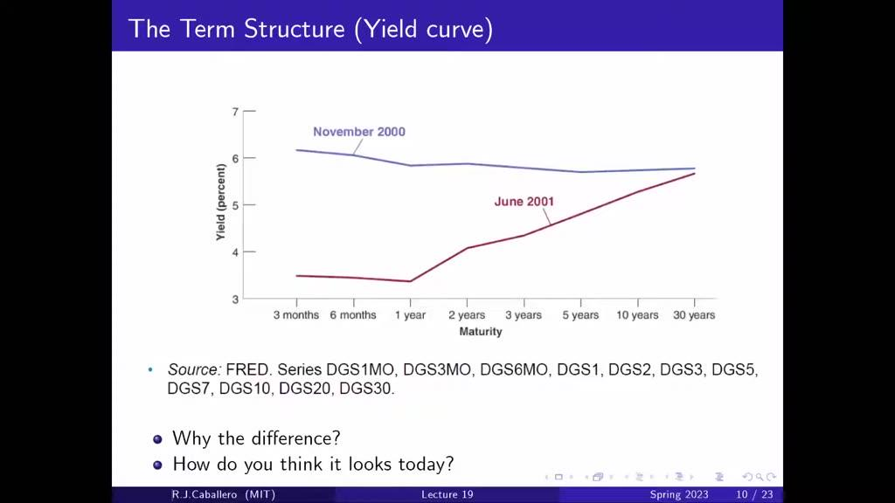
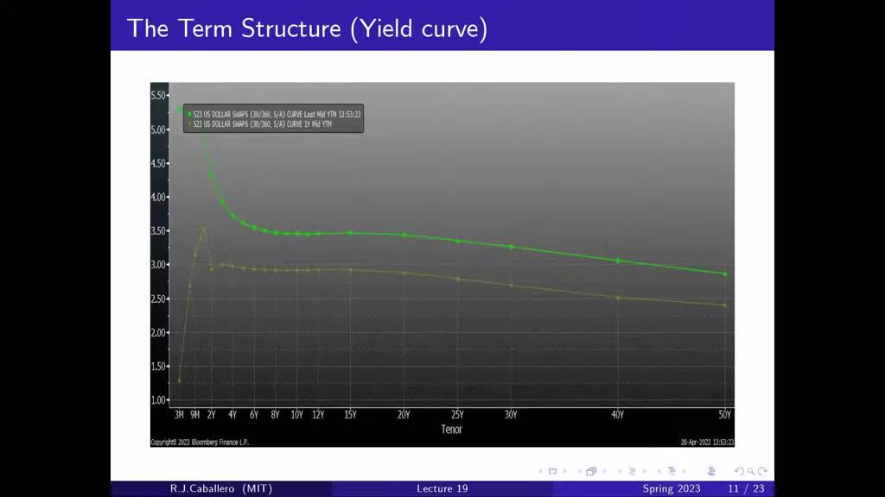
课件截图第 10 页 · 对照官方第 23 讲逐字稿（页末可离线查看）。
课件将债券风险分为违约风险和价格风险。本段先排除违约，只考虑两年零息债持有一年后出售的价格风险，令 xᵇ 为投资者要求的这一年持有期额外预期回报。
风险补偿通过较低的购买价格体现：承诺最终支付仍是 100，今天买得更便宜，预期回报就更高。这里 xᵇ 只进入第一段持有期，不能机械地给两个分母都加一次。也不能把 xᵇ 直接称作两年到期收益率增加的全部幅度；小变动近似下，它对两年年化收益率的贡献约为 xᵇ/2。
为什么后一段没有同样的价格风险补偿？在课堂按年模型中，债券变成一年期后持有至到期，终值确定、不再需要中途卖出。如果加入违约、通胀或更短交易间隔，就要重新建模。
老师也讨论了负期限溢价的可能性：如果一种资产恰在其他资产表现糟糕时提供保护，投资者可能愿意接受较低预期收益。补偿取决于风险与投资者其他财富的关系，不能只按价格波动大小排序。
课件截图第 11–12 页 · 对照官方第 23 讲逐字稿（页末可离线查看）。
股票与普通债券有两点关键区别：分红通常不固定，也没有预定的还本到期日。企业减少分红并不自动构成债券意义上的违约；这并不代表股东没有亏损风险。
设 Qₜ 为今天除息后的股价，Dᵉₜ₊₁ 为下一期预期分红，Qᵉₜ₊₁ 为下一期除息后的预期卖价。持有一年，可以拿到分红并卖出股票：
左边是要求的预期总回报，右边包含股息和价格变化两部分。仅用“股息/股价”衡量总回报，会漏掉资本利得或损失。xˢ 是股票的风险补偿，不是今天实际已经赚到的额外回报。
一个自编例子：预计一年后分红 5、除息卖价 105，要求总回报 10%，今天的价格为 (5+105)/1.10=100。预计分红与卖价兑现时，总回报为 10%；实际结果可能不同。
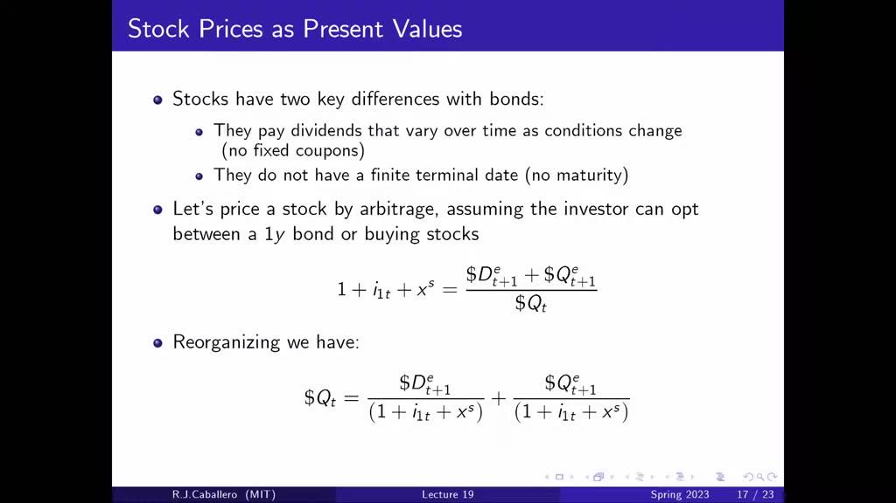
课件截图第 12、21 页 · 对照官方第 23 讲逐字稿（页末可离线查看）。
明年的股价同样由再下一期分红与卖价决定。不断向前替换，股票价格可写成前 T 期分红的现值，加上第 T 期剩余股票价值的现值。为便于看清结构，先假定要求的回报 q=i+xˢ 固定：
如果最后一项在 T 趋向无穷时消失，就得到股票基本面价值：全部预期未来分红的折现总和。“剩余价格的折现值消失”是一个条件，不能只因为把公式多展开几次，就自动删掉它。
用于理解的补充：若下一期预期分红为 D₁，此后每年按固定比例 g 增长，q 固定，并满足 q>g，则几何级数给出：
这就是互动实验采用的固定增长股利模型，是帮助操作的简化扩展，课件原推导更一般。这里分子必须是下一期分红 D₁；若拿到的是当期 D₀，应先乘 1+g。q≤g 时，该无限期模型不能给出有限价格，这不是“股票真的值无限多”，而是永续增长假设和折现条件不适用。
例如 D₁=4、i=3%、xˢ=5%、g=2%，价格为 4/(0.08−0.02)=66.67；风险溢价升到 7% 时，其他条件不变，价格降到 50。名义分红用名义要求回报；实际分红用实际要求回报，口径要配套。
课件截图第 13 页 · 对照官方第 23 讲逐字稿（页末可离线查看）。
在本课短期 IS–LM 框架中，降息使 LM 下移、需求和产出增加。对资产价格，至少有两条不同渠道：
| 渠道 | 固定或改变什么 | 价格作用 |
|---|---|---|
| 折现渠道 | 未来现金流给定，适用利率下降 | 固定现金流债券和股票现值↑ |
| 盈利与分红渠道 | 产出和销售改善，预期分红上升 | 股票额外受益；债券约定票息通常不随之提高 |
这解释了为何资产价格也是货币政策传导的一部分：资产价值改变家庭财富和企业融资条件，进而影响消费与投资。下一讲会把这些预期渠道带回 IS。
“降息推高股价”仍有前提。如果降息同时传递更差的经济前景，或者金融恐慌使风险溢价上升，分红下降和风险上升可能超过折现率下降的影响。也要分清当前政策利率下降与整条未来利率路径下降。
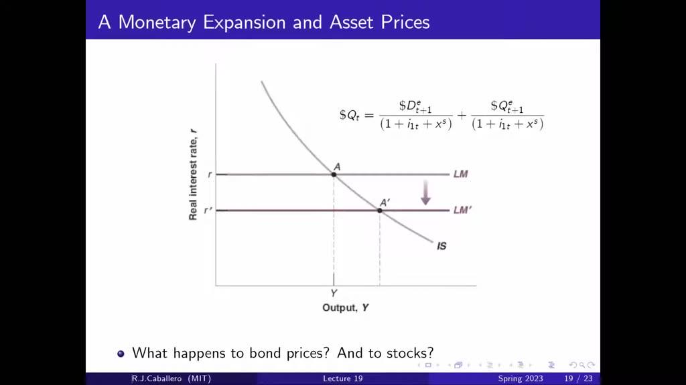
课件截图第 14 页 · 对照官方第 23 讲逐字稿（页末可离线查看）。
自主消费增加使 IS 右移，原本会提高产出与分红。但市场会立即问：央行会不会为稳定通胀而加息？不同政策反应会带来不同资产价格方向。
| 政策情景 | 产出/预期分红 | 利率/折现 | 可能的股价结果 |
|---|---|---|---|
| 央行维持原利率 | 需求增加，分红可能提高 | 没有额外紧缩 | 通常受到分红渠道支持 |
| 央行部分抵消需求扩张 | 分红改善较少 | 利率提高 | 两种力量相反，方向取决于强度 |
| 央行完全抵消额外需求 | 产出和分红没有相应改善 | 利率提高 | 仅剩负的折现影响时，价格下降 |
老师用 2023 年课堂环境解释“好消息成为坏消息”的机制，而不是提出普遍规律。在衰退和通胀较低的环境中，央行可能欢迎需求回升，资产价格反应就不同。消息也可以先改变市场利率，实际政策调整稍后才发生。
互动中的“盈利与利率同时变”允许分别改变分红和利率，并显示合并效果。这是估值比较，不是完整估计央行反应函数；分红变化幅度由学习者给定。
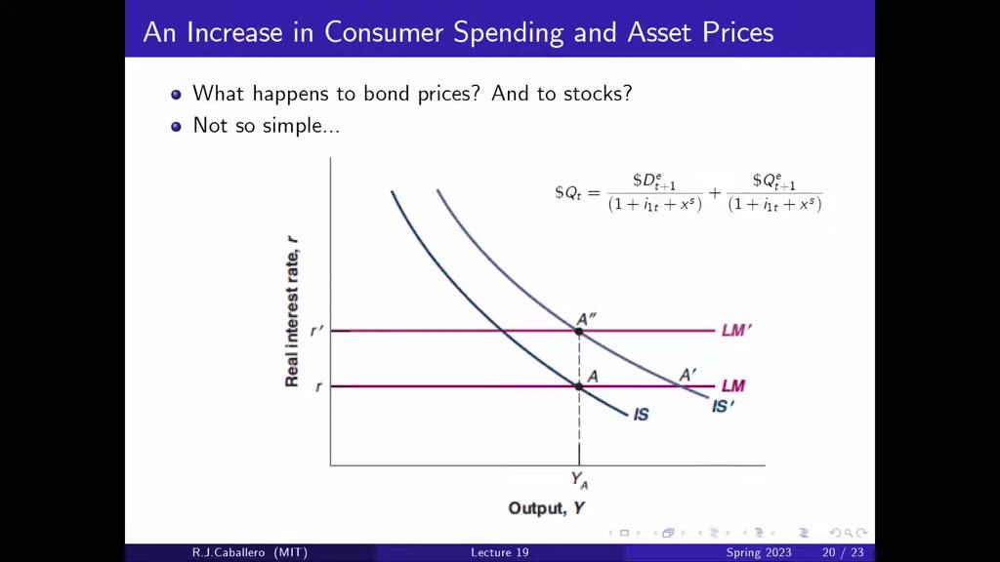
课件截图第 15–20 页 · 对照官方第 23 讲逐字稿（页末可离线查看）。
课件用疫情初期与 2023 年 5 月区域银行波动展示风险偏好变化。老师把 VIX 当作风险情绪的线索：恐慌加剧时，股票要求的风险补偿可能提高，价格随之下降。
但 VIX 不是公式中的 xˢ 本身，不能把指标读数直接代入股价折现率。更不能仅凭 VIX 上升与股价下跌同时发生，就断言前者独立“导致”后者。共同的银行或经济新闻，可以同时改变风险情绪和未来分红预期。
原课在学生提问后明确指出了共同冲击的问题。复习时可把事件拆成两条：担心未来经营变差 → 分红预期下降；对坏结果更不愿承担风险 → 要求的风险补偿上升。两条都可能压低价格。
课件中交易曲线的断续与暂停交易有关；这一现象本身不能量化风险溢价。这里保留原历史截图帮助核对，不把它们作为当前行情。
课件截图第 21 页 · 对照官方第 23 讲逐字稿（页末可离线查看）。
老师最后讨论投机泡沫：价格似乎远超合理现金流预期所支持的价值，购买者仍相信能以更高价格转卖。股票没有预设到期日，转售叙事可以不断向未来推；这也是为什么展开式中的终值条件不能忽略。
在课堂简化模型中，有限到期、已知最终支付的债券有清楚的终值边界，难以支持同样无限延续的转售逻辑。这不意味着现实债券市场不会错价，也不意味着公司信用风险或流动性风险不存在。
“涨得很快”不是泡沫的充分证明。预期分红、利率或风险溢价发生合理变化，也能改变基本面价值；而未来基本面并不可直接观察。反过来，一个复杂的估值模型也无法保证预测准确。
课件以牛顿参与南海泡沫的历史轶事收尾，用于说明聪明人同样可能被上涨价格吸引。这里不把故事当作识别泡沫的统计证据，也不把高估值直接等同于未来必然暴跌。
年末支付 10，连续 3 年，固定年利率 5%。若改成从今天开始连续支付 3 次，现值如何变化？
同样 3 次付款整体提前一年，现值乘以 1.05，不是多加一次付款。
当前一年利率 4%，预期下一年一年利率 6%，无风险补偿。两年后支付 100 的债券价格与 YTM 是多少？
不是 10%，也不是把两个利率相乘。约 5% 是小利率近似。
上一题若一年持有两年债的风险补偿 xᵇ=2%，如何修改？
xᵇ 加入第一段持有期的要求回报；小利率近似下，两年 YTM 由约 5% 升至约 6%，不是直接升至 7%。
今天股价 100，下一年预期分红 4，除息后的预期股价 106。预期总回报多少？若只算 4/100 漏掉了什么？
股息率为 4%，另有预期资本利得 6%。实际股价与分红可能偏离预期。
补充模型中 D₁=4、i=3%、xˢ=5%、g=2%。若 D₁ 增加 10%，i 升到 5%，其他条件固定，价格怎样变？
分红增加不足以抵消折现率提高，价格下降 17.5%。不能仅按“盈利好消息”判断股价方向。
把股票的一期定价式向前展开十次，能否直接写成仅有十期分红的现值？
不能。还要加第十期剩余股价的折现值。只有额外假设终值为零，或在无限期极限下终值折现项消失，才可删除。若终值包含十期以后分红，也不能再把同一批现金流重复加一次。
一次银行坏消息后 VIX 上升、股价下降。这足以证明“VIX 上升独立导致股价下降”吗？
不足以。共同新闻可能同时改变风险溢价、盈利预期与指标。可以用模型解释各种渠道，但单纯同向或反向变动不能识别因果，也不能把 VIX 读数当成 xˢ。
把资产价格拆成“预期现金流、无风险利率路径、风险补偿”，再问什么变了、什么保持不变。所有方向判断都带着这些条件。
| 符号 | 含义 | 阅读提醒 |
|---|---|---|
| \(Z_t,\ V_t\) | 当期现金流与资产现值 | 是否包含今天的付款必须说明。 |
| \(i_{1t},\ i^e_{1,t+1}\) | 当前一年利率与预期未来一年利率 | e 是今天形成的预期，不是已经实现的值。 |
| \(P_{2t},\ P^e_{1,t+1}\) | 两年零息债现价与一年后预期卖价 | 下标期限会随时间流逝缩短。 |
| \(i_{2t}\) | 两年到期收益率（YTM） | 由当前价格反推的等价年率，不保证持有一年后的回报。 |
| \(x^b\) | 一年持有两年债的风险补偿 | 按课件例子只进入第一段要求回报；不是两年 YTM 的全部额外部分。 |
| \(Q_t,\ D^e_{t+1},\ Q^e_{t+1}\) | 股票除息价格、下一期预期分红与预期除息卖价 | 不要把包含股息的总回报和股息率混淆。 |
| \(x^s\) | 股票要求的风险溢价 | 不等于 VIX，不等于实际已经得到的收益。 |
| \(r_t\) | 实际利率 | 实际现金流与实际贴现率配套。 |
| \(T,\ q,\ g,\ D_1\) | 付款次数/展开期数、要求回报、固定分红增长率、下一期分红 | 补充固定增长模型要求 q>g；q=i+xˢ，百分数输入需换为小数。 |
按附件顺序保留，包括重复画面、来源声明与片尾。正文按主题归并；图表自身的版权说明保持原样。
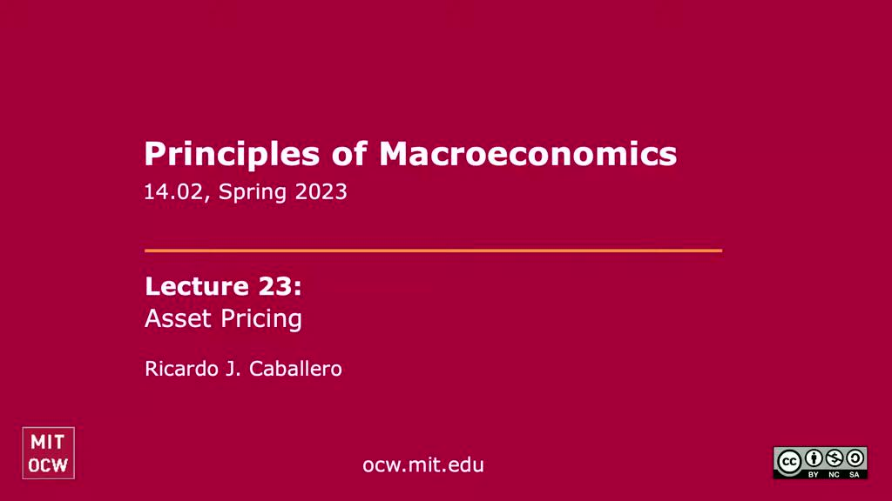
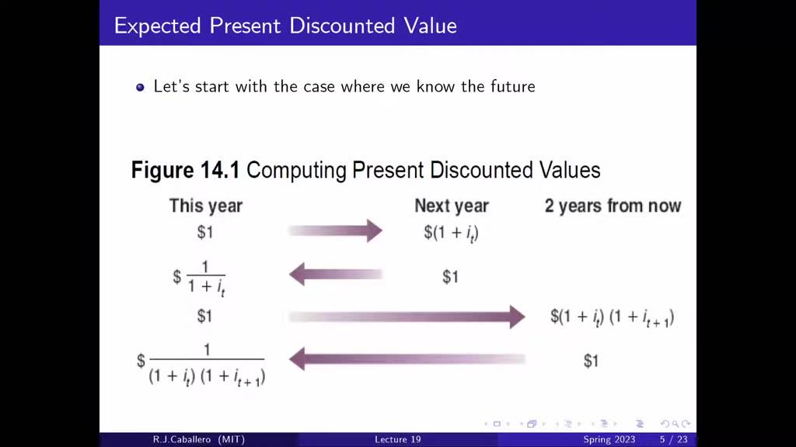
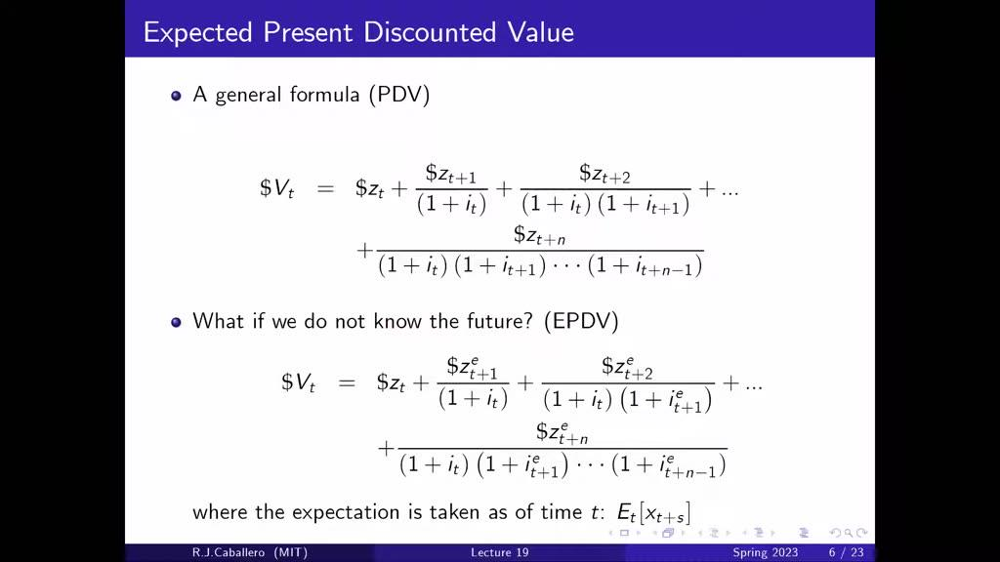
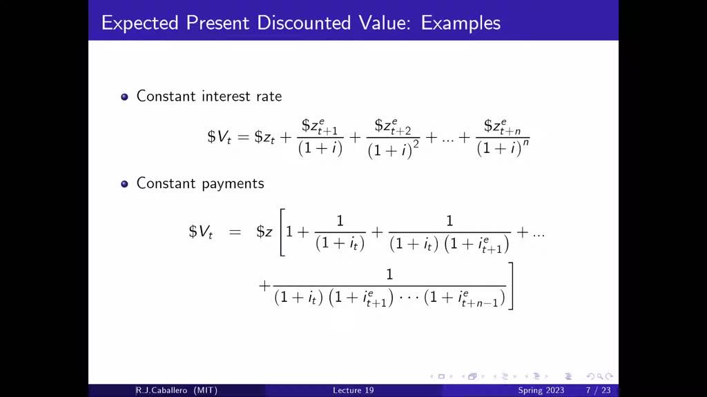
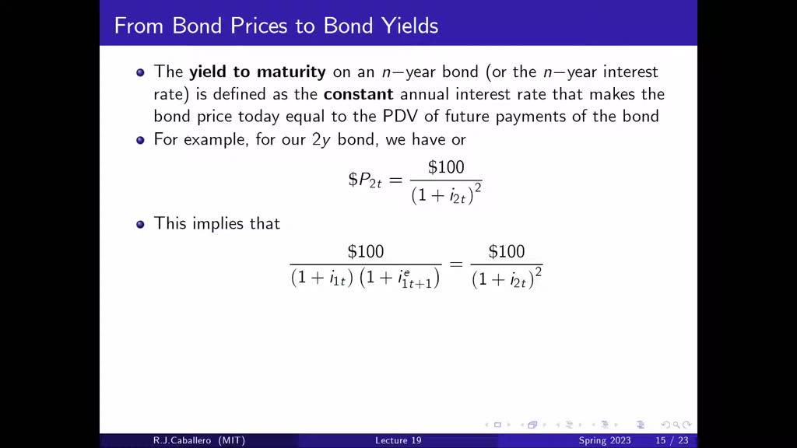
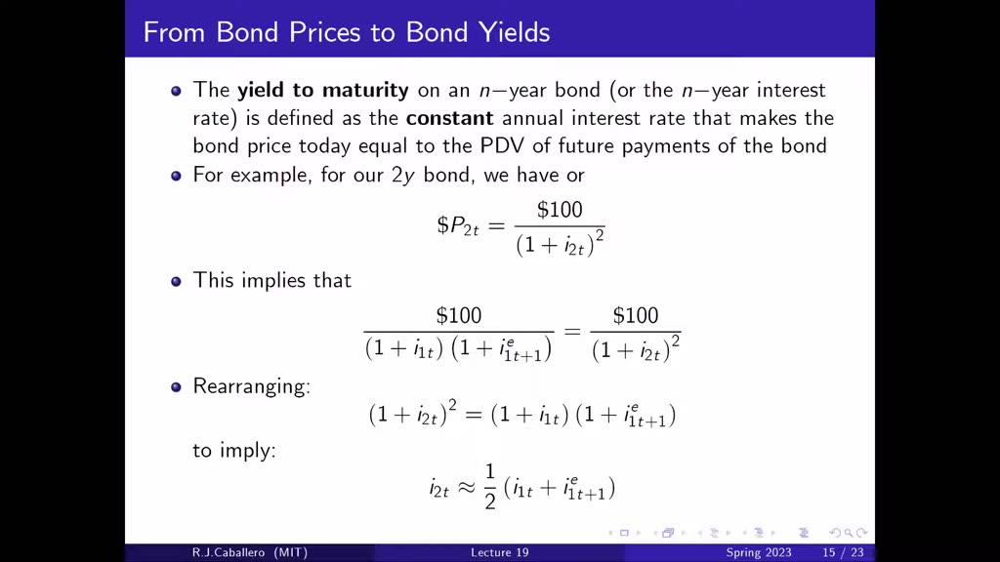
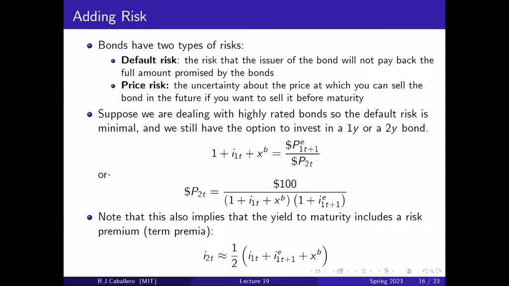
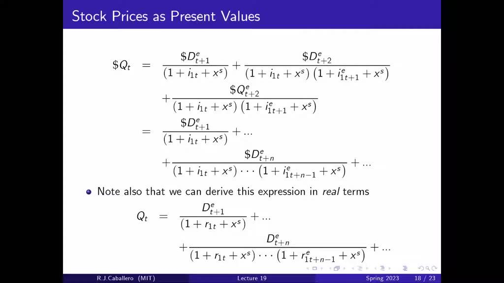
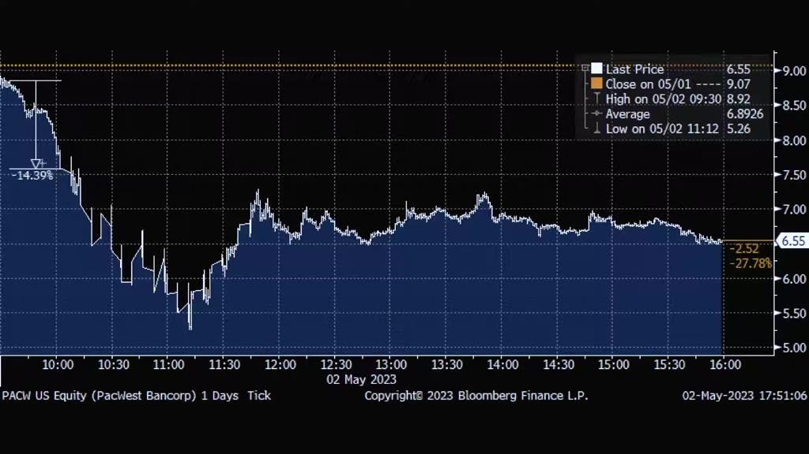
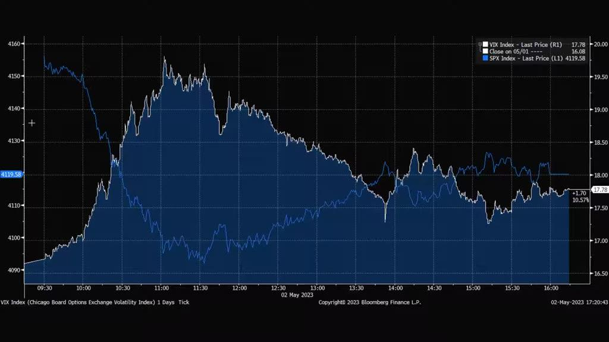
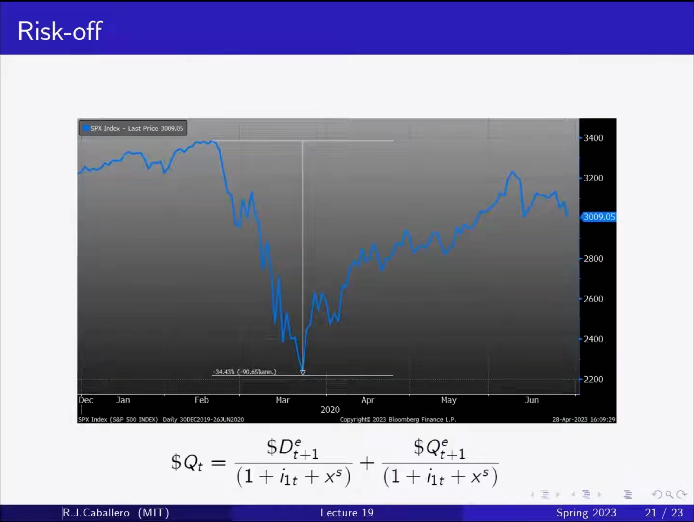
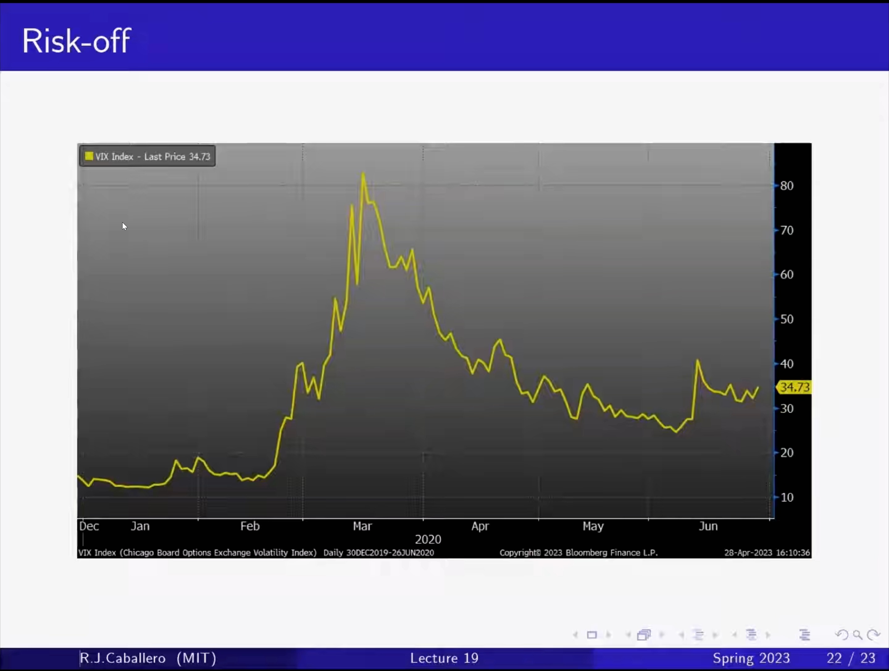
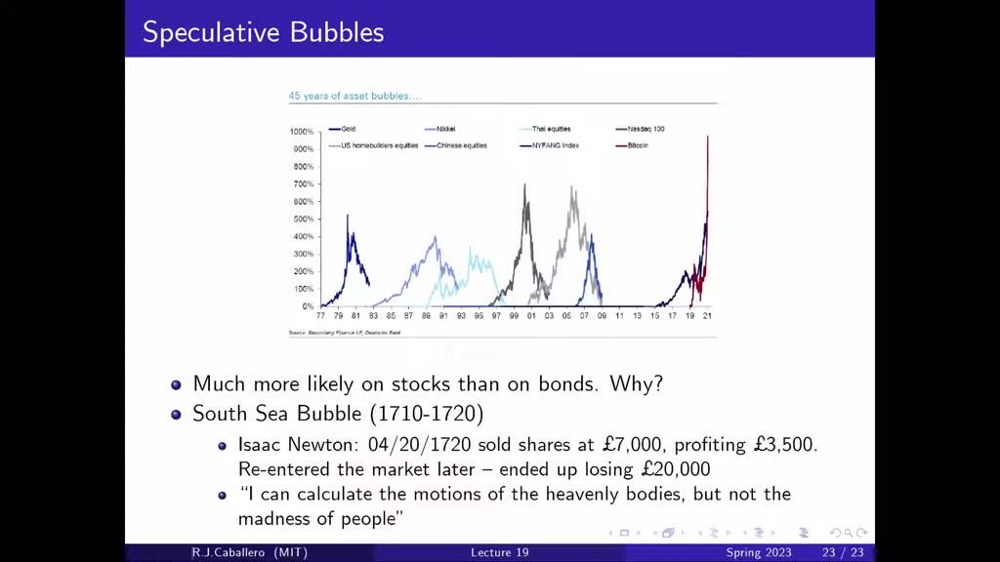
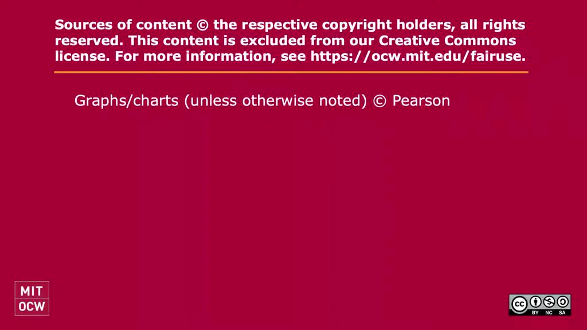
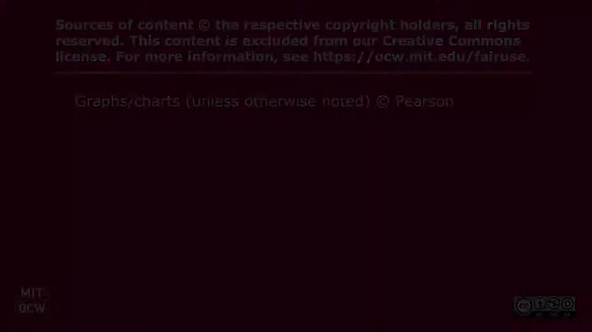